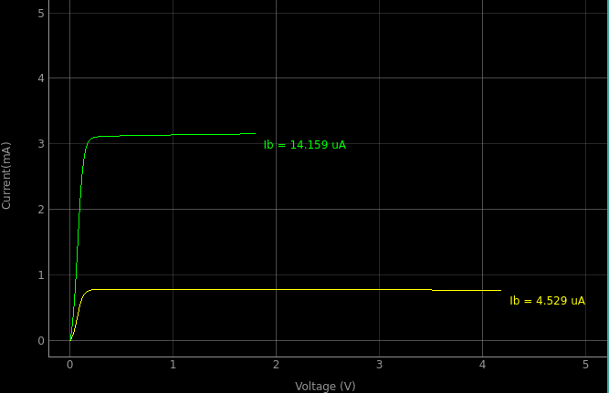

Schematic
"Experiement circuit diagram"

"Expeyes Circuit Connections"

Instructions for Input
 Expected Graph for NPN Transistor's Input characteristic in CE Mode
Expected Graph for NPN Transistor's Input characteristic in CE Mode
- Make the connections as shown in the schematic
- Voltage at PV1 is applied to the collector, via a 1k resistor.
- The value of PV1 is incremented in steps and at each step the collector
voltage is measured.
- The Collector current is calculated from the voltage drop across the 1k resistor.
- The current is calculated by the software using Kirchoff's laws in the output and input loops.
- Make sure the "Use Defaults" checkbox is ticked
- Run the experiment by clicking the Start button.
- Once the trial is completed, you will see a "Completed plotting" message on the bottom left side of the window
- You can save the value pairs by using the "Save Data" button
- Now uncheck the "Use Defaults" box and run the experiment using your custom values.
- Note: V_CE must be lesser than 4.5V (Expeyes doesn't support higher voltage)
Instructions for Output

Expected Graph for NPN Transistor's Output characteristic in CE Mode
- The output characteristic curve of an NPN transistor at different
base currents are plotted.
- The base current is set by the voltage at PV2.
- Voltage at PV1 is applied to the collector, via a 1k resistor.
- The value of PV1 is incremented in steps and at each step the collector
voltage is measured.
- The Collector current is calculated from the voltage drop across the 1k resistor.
- Make connections, use any NPN transistor, 2N2222 is provided with the kit.
- Press START to get a Vc-Ic plot for a particular Ib. Change Ib by changing PV2 volatge.